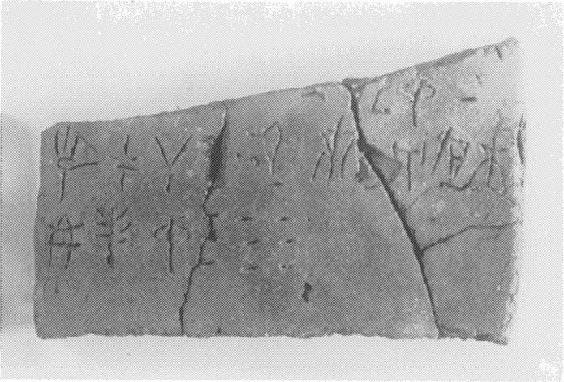
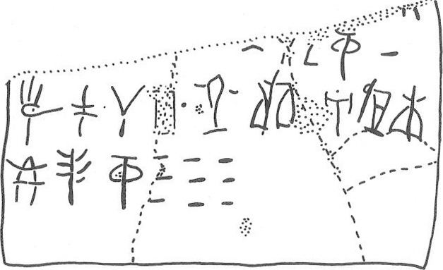

-
KH10
Names
Aliases for the inscription.
KH10, KH 10
Support
Type of Object.
Tablet
Location
Site where object was found.
Khania
Findspot
Location at Site.
Unavailable


Scribe
Writer of Inscription.
KH Scribe 5
Context
Approximate Date of Inscription.
Late Minoan IB
1500-1450 BCE
Dimensions
Height x Length x Thickness.
[6.40]
40.20
1.40
cm
GORILA OCR
Catalogue
Museum Reference Number.
Readings
1 1 0 2 doubtful
1 2 1 ¹⁄₂ doubtful
1 3 2 GRA certain
1 3 3 10 certain
2 4 4 I certain
2 4 4 PA certain
2 4 4 SA certain
2 4 4 JA doubtful
2 4 5 *900 certain
2 4 6 QA certain
2 4 6 *118 certain
2 5 7 A certain
2 5 7 KI certain
2 5 7 PI certain
3 5 7 E certain
3 5 7 TE certain
3 5 8 GRA certain
3 5 9 90 certain
Linear A Transcription
A Linear A transcription with words parsed separately.
Line breaks match the inscription.
𐄈𐝆𐙉𐄐
𐘚𐘂𐘞𐘱𐄁𐘌𐙈𐘇𐘸𐘢
𐘡𐘃𐙉𐄘
ASCII Transcription
An ASCII transcription with words parsed separately.
Line breaks match the inscription.
2¹⁄₂GRA10
IPASAJA*900QA*118AKIPI
ETEGRA90
Linear A Tabulation
A Linear A transcription with words parsed separately.
Line breaks are logical, e.g. to represent a list.
𐄈
𐝆
𐙉𐄐
𐘚𐘂𐘞𐘱𐄁𐘌𐙈
𐘇𐘸𐘢𐘡𐘃𐙉𐄘
ASCII Tabulation
An ASCII transcription with words parsed separately.
Line breaks are logical, e.g. to represent a list.
2
¹⁄₂
GRA10
IPASAJA*900QA*118
AKIPIETEGRA90
KH 10
(KH MUS.) (GORILA III: 36-37) (LM IB
context)
Schoep 2002, type Ia (mixed
commodities)
KH Scribe 5
|
side.line
|
statement
|
logogram
|
number
|
fraction
|
|
|
supra mutila
|
|
|
|
|
.1
|
|
|
]
2
|
|
|
.2
|
]
vest.
[
|
|
|
J
|
|
.2
|
|
GRA
|
10
|
|
|
.3
|
I-PA-SA-
JA
• QA-*118
|
|
|
|
|
.3-4
|
A-KI-PI-E-TE
|
GRA
|
90
|
|
QA-*118: cf. I-QA-*118 (HT 44a.1; HT
131a.2-3)
Commentary © John Younger
References
papers/GORILA-Vol3.pdf#page=60